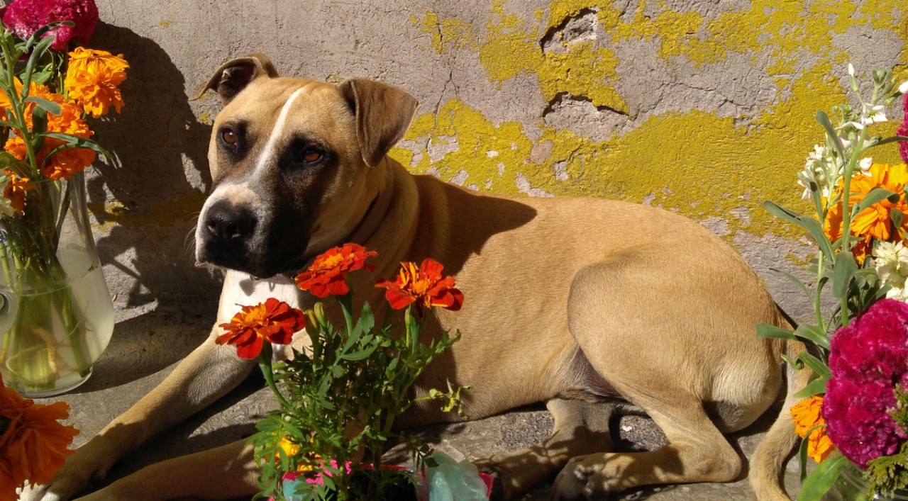

Mascotitas de Iván
Nombres: Sasha / Nozomi / Los pericos
2008 / 2013 / ¿?
Edad: 13 / 8 años / ¿?

Un gato negro con un poco de historia en la familia, un perro el cual llego junto con nosotros a la casa "nueva"
y un trio de pericos medio peleoneros
Mascotitas de Victor
Nacimiento: 18 de enero del 2006, el 23 de marzo del 2015 y en marzo del 2016.
Edad: 15, 6 y 5.

Marnie es una perrita french poodle mini toy de 15 años, Nadja es una perrita
pastor aleman de 6 años y Lucas es un pastor aleman de 5 años...
Mascotita de Luis
Nombre: Choi
Nacimiento: Julio del 2016
Edad: 5 años

Choi es un perro de color negro y de tamaño mediano que a formado parte de mi familia durante
5 años. Es un perro muy activo y jugueton que le encanta correr y salir a pasear minimo 1 hora,
aun asi...
Mascotita de Ana
Nombre: Pechan (Pepe)
Nacimiento: 12 de septiembre 2015
Edad: 6

Es un perro tamaño mediano, es color cafe claro confundible con amarillo,
oficial mente desconocemos su fecha de nacimiento lo adoptamos de la calle posiblemente vivio en
la calle 1 año mas o menos y a sido parte de la familia por 6 años.
Su nombre oficial es Pechan (referenca a un personaje de Ranma1/2) su apodo es Pepe.
Es un perro flojo parece que durme 24/7 y si no ponemos objetos en los sillones se sube a dormir,
come lo que se cae de la mesa, se sienta para pedir comida, sabe abrir la puerta
, es bastante celoso y le gusta que lo cargen.